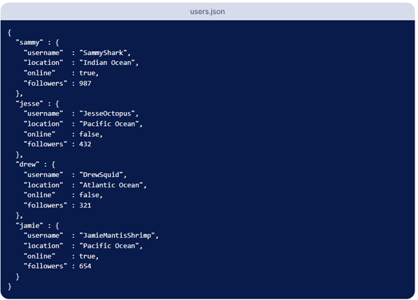
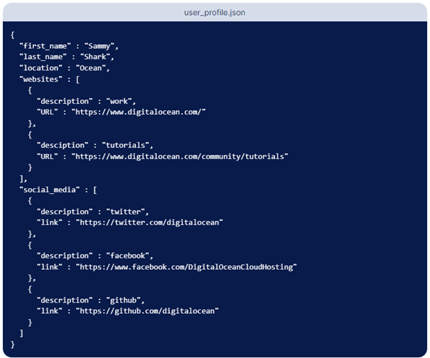
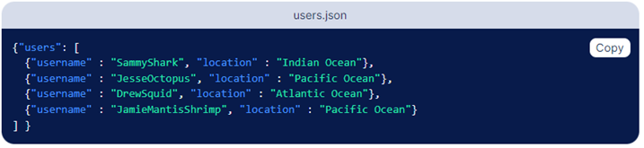

JSONP и JSON
JSON - Въведение [1]
JSON (съкратено от JavaScript Object Notation) е формат за споделяне на данни. Както името подсказва, JSON произлиза от програмния език JavaScript, но може да се използва от почти всички други езици.
JSON e също така олекотен, лесно четим, не изисква много форматиране и предоставя добра алтернатива на XML.
Синтаксис и Структура на JSON [1]
JSON използва .json разширението, когато е дефиниран в отделен файл. Среща се също така и под формата на символен низ (JSON string) или на обект, който се достъпва чрез променлива.
JSON обектът използва формата ключ-стойност, като обикновено е обвит в къдрави скоби.
фиг. 1: пример за JSON обект
Въпреки, че горния пример е прост, JSON обектът може да е доста комплексен и дълъг от гледна точка на редове код. Както се вижда на фигурата, дефиницията на обекта започва и завършва с къдрави скоби { }, като между тях стоят двойките ключове-стойности.
Ключ-стойност двойките имат двоеточие между тях по следния начин: “key”: “value”. Всяка ключ-стойност двойка е разделена със запетая.
JSON ключовете стоят от ляво на двоеточието. Те трябва задължително да бъдат обгърнати с двойни кавички, като “key“ може да бъде всеки един валиден символен низ. Във всеки обект, ключовете трябва да са уникални. Символните низове на ключовете могат да съдържат празни интервали както в горния пример (“first name”), но това може да ги направи трудни за достъпване, когато ги достъпваме в кода ни, затова е най-добре да се използват долни черти: “first_name”.
JSON стойностите стоят от дясно на двоеточието. Те трябва да са един от следните шест типове данни:
- символни низове (strings)
- числа (numbers)
- обекти (objects)
- масиви (arrays)
- булеви (booleans – true или false)
- null
Като подаваме тези стойности на ключовете, те запазват синтаксиса на своите типове: символните низове ще са с двойни кавички, но числата няма да бъдат.
JSON файловете обикновено са форматирани на няколко реда с нужните отстояния, но JSON може да бъде написан и на един ред, без форматиране:
фиг. 2: пример за JSON обект без форматиране
Важно е да уточни, че JSON обекта не е същия формат като JavaScript обект. Въпреки, че можем да използваме функции в JavaScript обектите, не можем да ги ползваме като стойности в JSON. Най-важният атрибут на JSON е това, че може лесно да се трансферира между няколко програмни езика. От друга страна JavaScript обектите могат да се обработват само от JavaScript.
Комплексни типове в JSON [1]
JSON може да съдържа както вложени обекти, така и вложени масиви. Тези вложени обекти и масиви са подадени като стойности на ключове и самите те са изградени от ключ-стойност двойки
Вложени обекти
фиг. 3: пример за вложени обекти в JSON
На горната фигура виждаме, че за всеки от четирите потребителя (“sammy”, “jesse”, “drew”, “jamie”) имаме вложен JSON обект, който е подаден като стойност за всеки ключ. Във вложения обект имаме други прости стойности (“username”, “location”, “online”, “followers”). Както при всяка друга стойност, когато ползваме обекти като стойности, използваме запетаи, за да разделим елементите.
Вложени масиви
Данните могат да се влагат в JSON като използваме масиви, които са подадени като стойност. В JavaScript използваме квадратни скоби [ ], за да декларираме масив. Масивите са подредени колекции и могат да съдържат стойности от всякакви типове данни. Както е в долния пример, можем да използваме масив, когато имаме много данни, които могат да се групират заедно.
фиг. 4: пример за вложени масиви в JSON
В конкретния пример имаме различни сайтове и социални медии свързани с конкретен потребител. “websites” и “social_media” ключовете съдържат масив с информация за тези сайтове и социални медии
JSON срещу XML [1]
XML или eXtensible Markup Language е начин да се съхраняват данни, които могат да бъдат прочетени както и от хора, така и от машини. XML форматът е също така наличен за употреба от много програмни езици.
Може да се каже, че XML е подобен на JSON, но изисква много повече текст, което го прави по трудоемък за писане и за четене. Друг минус на XML е, че трябва да се parse-ва с XML parser, а JSON от друга страна, може да бъде parse-нат чрез стандартна функция. Друго значително предимство на JSON, е че позволява да използваме масиви, докато при XML не можем.
фиг. 5: пример за XML формат
Сега нека сравним горния XML файл с JSON файл:
фиг. 6: пример за JSON формат
Както можем да забележим, JSON е доста по-компактен и не изисква затварящи тагове, докато XML ги изисква. XML също така не използва и масиви в горния пример, докато JSON го прави.
Лесно може да се забележи, че XML прилича на HTML, при употребата им на тагове. Въпреки, че JSON е по-олекотен от XML и бърз за използване в много ситуации, включително AJAX апликации, ще е хубаво първо да разберем напълно типа на проекта, по който работим, преди да изберем кой формат да използваме.
Разчитане на JSON от JavaScript [2]
Всеки програмен език има отделен начин за разчитане и усвояване на JSON, но сега ще разгледаме как това се случва в JavaScript.
Статичния метод JSON.parse() разчита JSON символен низ, конструирайки JavaScript обект.
const json = '{"result":true, "count":42}';
const obj = JSON.parse(json);
console.log(obj.count);
// Очакван резултат: 42
console.log(obj.result);
// Очакван резултат: true
JavaScript демо 1: JSON.parse()
Синтаксис:
JSON.parse(text)
JSON.parse(text, reviver)
Параметри:
text – JSON символен низ, който ще разчитаме.
reviver (не е задължителен) – функция, която при четенето на всяка стойност, също така я трансформира преди да я върне. Функцията се извиква със следните аргументи: key, value
Какво връща JSON.parse() ?
Връща обект, масив, символен низ, число, булева стойност или null базиран на JSON текста
Exceptions:
функцията връща SyntaxError, ако символният низ, който прочитаме не е валиден JSON
Употреба на JSON.parse() – още примери:
JSON.parse("{}"); // {}
JSON.parse("true"); // true
JSON.parse('"foo"'); // "foo"
JSON.parse('[1, 5, "false"]'); // [1, 5, "false"]
JSON.parse("null"); // null
JavaScript демо 2: JSON.parse() - примери
Употреба на JSON.parse(), използвайки reviver параметъра:
JSON.parse(
'{"p": 5}',
(key, value) =>
typeof value === "number"
? value * 2 // връща value * 2 за числата
: value, // връща всичко останало без да го променя
);
// { p: 10 }
JSON.parse('{"1": 1, "2": 2, "3": {"4": 4, "5": {"6": 6}}}', (key, value) => {
console.log(key);
return value;
});
// 1
// 2
// 4
// 6
// 5
// 3
// ""
JavaScript демо 3: JSON.parse() с reviver параметър
Важни забележки:
JSON.parse() не позволява изпозлването на запетаи след последния елемент:
// и двете ще хвърлят SyntaxError
JSON.parse("[1, 2, 3, 4, ]");
JSON.parse('{"foo" : 1, }');
JavaScript демо 4: JSON.parse() floating comma
JSON.parse() не позволява използването на единични кавички:
// ще хвърли SyntaxError
JSON.parse("{'foo': 1}");
JavaScript демо 5: JSON.parse() единични кавички
Превръщане на JavaScript стойност в JSON [3]
Статичният метод JSON.stringify() превръща JavaScript стойност в JSON символен низ, като има и опция да заменя стойности, ако заместваща функция е подадена, както и опция за включване на само определени свойства (properties) на обекта, ако заместващ масив е подаден.
console.log(JSON.stringify({ x: 5, y: 6 }));
// Очакван резултат: "{"x":5,"y":6}"
console.log(JSON.stringify([new Number(3), new String('false'), new Boolean(false)]));
// Очакван резултат: "[3,"false",false]"
console.log(JSON.stringify({ x: [10, undefined, function(){}, Symbol('')] }));
// Очакван резултат: "{"x":[10,null,null,null]}"
console.log(JSON.stringify(new Date(2006, 0, 2, 15, 4, 5)));
// Очакван резултат: ""2006-01-02T15:04:05.000Z""
JavaScript демо 6: JSON.stringify()
Синтаксис:
JSON.stringify(value)
JSON.stringify(value, replacer)
JSON.stringify(value, replacer, space)
Параметри:
value – стойността, която ще конвертираме в JSON символен низ
replacer (опционален) – функция, която променя режима на работа на процеса на конвертиране, или масив от символни низове или числа, който конкретизира кои от свойствата на value обекта да бъдат добавени към изхода
space (опционален) – символен низ или число, което се използва за вмъкване на празни интервали към JSON символния низ, за да бъде по-лесно четим. Ако този параметър е число, това показва колко празни символи ще бъдат използвани като идентация като максимумът е 10 (всяко число, което е по-голямо от 10 ще се смята като 10). Стойности по-малко от 1 показват, че никакво празно разстояние не трябва да се използва. Ако параметърът е символен низ, същият този низ( или първите 10 символа на символния низ, ако е по-дълъг от това) се поставят преди всеки вложен обект или масив
Какво връща JSON.stringify()
връща JSON символен низ, който репрезентира подадената стойност, или undefined
Exceptions
функцията хвърля TypeError, ако подадения от нас value обект е цикличен или ако съдържа BigInt стойност
Употреба на JSON.stringify(), използвайки функция като replacer:
function replacer(key, value) {
// Филтриране на свойства
if (typeof value === "string") {
return undefined;
}
return value;
}
const foo1 = {
foundation: "Mozilla",
model: "box",
week: 45,
transport: "car",
month: 7,
};
JSON.stringify(foo, replacer);
// '{"week":45,"month":7}'
JavaScript демо 7: JSON.stringify() с replacer функция
Употреба на JSON.stringify(), използвайки масив като replacer:
const foo2 = {
foundation: "Mozilla",
model: "box",
week: 45,
transport: "car",
month: 7,
};
JSON.stringify(foo, ["week", "month"]);
// '{"week":45,"month":7}', запазваме само "week" и "month" свойствата
JavaScript демо 8: JSON.stringify() с replacer масив
Употреба на JSON.stringify(), използвайки space параметър:
console.log(JSON.stringify({ uno: 1, dos: 2 }, null, "\t"));
/*
{
"uno": 1,
"dos": 2
}
*/
JavaScript демо 9: JSON.stringify() със space параметър
Пример за грешка при цикличен обект:
const circularReference = {};
circularReference.myself = circularReference;
// Сериализирането на циклична референция хвърля "TypeError: cyclic object value"
JSON.stringify(circularReference);
JavaScript демо 10: JSON.stringify() цикличен обект
Какво е JSONP? [4] [5] [6]
JSONP или JSON with Padding е стара техника, която позволява на разработчиците да заобиколят same-origin политиката, която се налага от браузърите, като използваме начина на работа на <script> елемента. Въпросната политика не позволява да четем каквито и да са responses изпратени ни от уебсайтове, чиито origins са различни от на този, който се използва на момента. Политиката обаче позволява да се изпрати request, но не и да се чете.
Origin-ът на един уебсайт е съставен от три части. Първо имаме URI схемата (т.е. https: //), после имаме името на хоста ( т.е. example.com), и накрая порта (напр. 443). Имена на уебсайтове като http://example.com и https://example.com имат различни origins, заради различията в URI схемата.
Как работи JSONP? [4] [5] [6]
Нека предположим, че в момента сме на localhost:8000 и искаме да изпратим заявка към сървър чрез JSON API:
https://www.server.com/api/person/1
Отговорът от сървъра може да изглежда така:
фиг. 7: JSON сървър response
Но заради политиката, спомената по-рано, заявката ще бъде блокирана, защото origins на уебсайта и на сървъра се различават.
Вместо ние да пращаме заявката, можем да използваме <script> елемент, на който политиката не се прилага – може да зарежда и изпълнява JavaScript от източник с различен origin. По този начин, уебсайт, който се намира на https://example.com може да зареди Google Maps библиотека например (т.е. CDN)
Като предоставим линка на API-то на src атрибута на <script> тага, той ще приеме отговора и ще го изпълни вътре в контекста на браузъра:
<script src="https://www.server.com/api/person/1" async="true"></script>
Проблемът тук е, че <script> елементът автоматично обработва и изпълнява върнатия код, който в нашия случай е JSON символния низ показан горе. JSON низът ще се приеме като JavaScript код, и така ще хвърли грешка, защото не е валиден JavaScript
фиг. 8: JSONP Syntax Error
JSON кодът щеше да работи добре, ако го бяхме закачили на променлива или ако го бяхме подали като аргумент на функция. Така вместо да връща чист JSON отговор, сървърът може да върне JavaScript код. Във върнатия код, JSON обекта е подаден като аргумент на функция. Името на функцията трябва да бъде подадено от клиента, защото кодът ще се изпълнява в браузъра. Името на функцията е предоставено в параметъра на заявката наречен callback.
https://www.server.com/api/person/1?callback=callbackName
callbackName({
"firstName": "Maciej",
"lastName": "Cieslar"
})
JavaScript демо 11: JSONP правилно извикване
За да работи JSONP, трябва и клиентът и сървърът да го поддържат.
Разчитане на JSON от JavaScript [4] [5] [6]
Ще създадем функция наречена jsonp, която ще изпрати заявката:
let jsonpID = 0;
function jsonp(url, timeout = 7500) {
const head = document.querySelector('head');
jsonpID += 1;
return new Promise((resolve, reject) => {
let script = document.createElement('script');
const callbackName = `jsonpCallback${jsonpID}`;
script.src = encodeURI(`${url}?callback=${callbackName}`);
script.async = true;
const timeoutId = window.setTimeout(() => {
cleanUp();
return reject(new Error('Timeout'));
}, timeout);
window[callbackName] = data => {
cleanUp();
return resolve(data);
};
script.addEventListener('error', error => {
cleanUp();
return reject(error);
});
function cleanUp() {
window[callbackName] = undefined;
head.removeChild(script);
window.clearTimeout(timeoutId);
script = null;
}
head.appendChild(script);
});
}
JavaScript демо 12: JSONP имплементация
Както виждаме, имаме глобална променлива наречена jsonpID – използваме я, за да сме сигурни, че всяка заявка ще има уникално име на функцията.
Първо, запазваме референция към <head> обекта в променлива, наречена head. След това увеличаваме jsonpID, за да сме сигурни, че името на функцията е уникално. Вътре в callback, който е предоставен от отговора от сървъра създаваме <script> елементът и callbackName, което се състои от символния низ jsonpCallback конкатениран с уникалното ID.
След това, слагаме вътре в src атрибута на <script> елемента URL-а на сървъра. Вътре в заявката, задаваме callback параметъра да е равен на callbackName. Също така задаваме async атрибута на true, за да не се блокира скрипта.
Имаме три възможни изхода от тази заявка:
- Заявката е успешна и window[callbackName] се изпълнява, което разрешава и promise-а с JSON резултата
- <script> елементът хвърля грешка и отказваме promise-а
- Изпълнението на заявката продължава повече от очакването и се хвърля timeout грешка
const timeoutId = window.setTimeout(() => {
cleanUp();
return reject(new Error('Timeout'));
}, timeout);
window[callbackName] = data => {
cleanUp();
return resolve(data);
};
script.addEventListener('error', error => {
cleanUp();
return reject(error);
});
JavaScript демо 13: JSONP cleanup
Callback-ът трябва да се регистрира на window обекта, за да може да бъде наличен вътре в създадения <script> контекст.
В горния код имаме и абстракция на процеса на почистване в cleanUp функция, където трите изхода – прекъсване, успех и слушателя за грешки изглеждат еднакво:
function cleanUp() {
window[callbackName] = undefined;
head.removeChild(script);
window.clearTimeout(timeoutId);
script = null;
}
JavaScript демо 14: JSONP cleanup функция
Функцията първо премахва регистрирания callback, който се извиква при успешен отговор. После Премахва <script> елемента от <head> и изчиства timeout-а. Също, за всеки случай, задава script референцията към null.
jsonp('https://gist.github.com/maciejcieslar/1c1f79d5778af4c2ee17927de769cea3.json')
.then(console.log)
.catch(console.error);
jsonp('https://gist.github.com/maciejcieslar/1c1f79d5778af4c2ee17927de769cea3.json')
.then(console.log)
.catch(console.error);
JavaScript демо 15: JSONP употреба
Заключение
Като цяло, JSONP е метод за заобикаляне на стриктни политики, който е останал в миналото и вече не се използва, а и не се препоръчва също. При този метод има много притеснения относно сигурността (например сървърът може да отговори с какъвто JavaScript код си иска, който може да е много различен от това, което очакваме, и ще има достъп до всичко в контекста на прозореца). Вместо JSONP, в днешно време се ползва CORS механизма, който ни позволява да правим безопасни cross-origin заявки.
[1] DigitalOcean “An Introduction to JSON” https://www.digitalocean.com/community/tutorials/an-introduction-to-json публикувано: 08.12.2016, редактирано на 24.08.2022
[2] MDN web docs “JSON.parse()” https://developer.mozilla.org/en-US/docs/Web/JavaScript/Reference/Global_Objects/JSON/parse последно редактирано на: 12.04.2023
[3] MDN web docs “JSON.stringify()” https://developer.mozilla.org/en-US/docs/Web/JavaScript/Reference/Global_Objects/JSON/stringify последно редактирано на : 6.04.2023
[4] LogRocket “JSONP demystified” https://blog.logrocket.com/jsonp-demystified-what-it-is-and-why-it-exists/ публикувано на 21.11.2019
[5] Atatus “JSONP” https://www.atatus.com/glossary/jsonp/ публикувано на 19.09.2022
[6] Online Interview Questions https://www.onlineinterviewquestions.com/what-is-the-difference-between-json-and/ публикувано на 18.10.2019